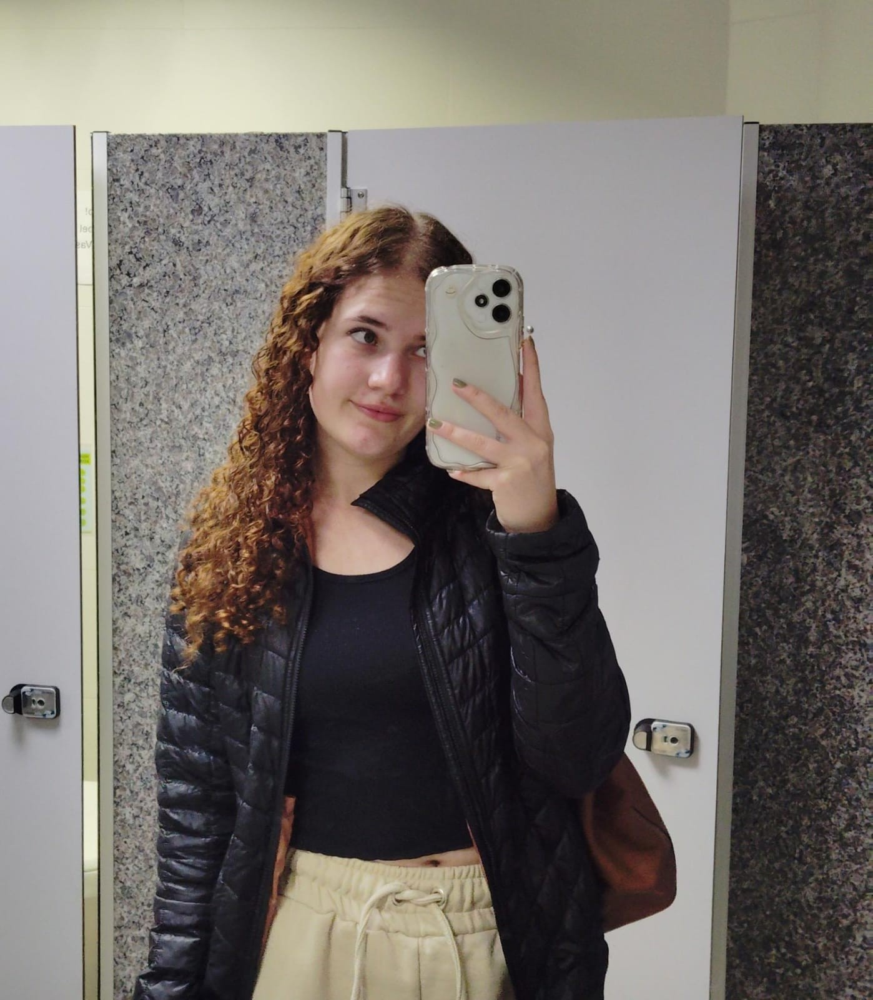
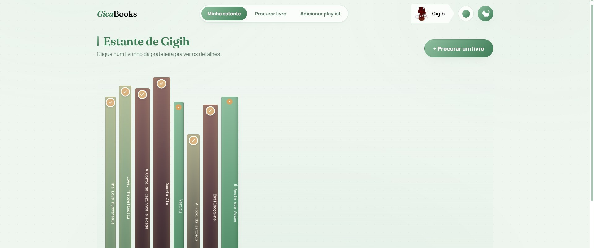

jogos · programação · som · design

Sou estudante de graduação em Jogos Digitais na PUCPR, com foco principal em programação. Ao lado disso venho estudando som, música e SFX, e também curso Web Design, UI e UX Design.
Como eu gosto de conhecer coisas novas, eu tenho vários hobbies atualmente, começando pelo meu favorito que é ler, e foi por isso, inclusive, que fiz meu primeiro aplicativo sendo de leitura. Também sou viciada em praticar exercícios físicos, principalmente academia, vôlei e dança. Dançar é minha maneira de me sentir mais leve. Adoro escrever sobre qualquer coisa, mas normalmente escrevo apenas por hobby, e também sou apaixonada por tudo que envolve carros e fã de Fórmula 1. Atualmente também estou aprendendo francês inicial.
Idiomas
Jogo investigativo sobre cibercrimes e mistérios, feito em parceria com um perito e professor de cibersegurança da PUCPR.
Jogo multiplayer de arena para até 4 jogadores disputarem e se divertirem juntos.
Jogo de plataforma em que Espoir precisa salvar sua terra do caos dos 4 elementos.
Point n' click pós-apocalíptico que acompanha a jornada de Alenthus em uma nova Era Glacial.
Aplicativo para criação de estante virtual de leitura. Permite cadastrar livros, acompanhar progresso, ver opiniões de outros leitores e montar playlists para ler ao som de alguma coisa.
